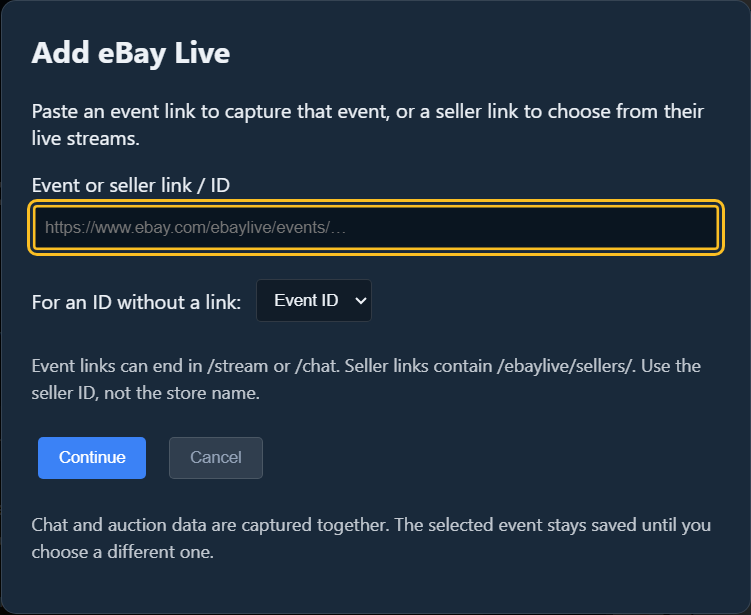
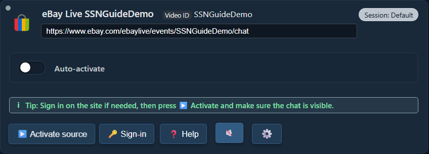
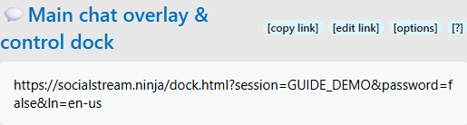
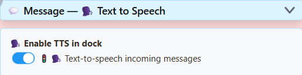
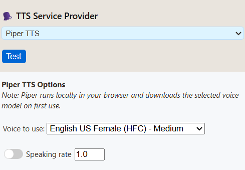

Zdroj = chat, který zachytáváte. Dok = okno SSN zobrazující tyto zprávy. OBS = místo, kam je umístíte ve vysílání.
Vyberte jeden způsob spuštění SSN. Oba nepotřebujete.
1. Otevřete SSN a zapněte ho
Stáhněte desktopovou aplikaci pro svůj počítač, nainstalujte ji a otevřete Social Stream Ninja.
Otevřete „Zdroje a nastavení“. Pokud panel vpravo zobrazuje Služba je vypnutá (Service Disabled), jednou na něj klikněte. Mělo by se zobrazit Služba je aktivní (Service Active).
Nainstalujte Social Stream Ninja z Internetového obchodu Chrome v Chrome nebo Edge.
Klikněte v prohlížeči na Rozšíření (dílek skládačky) a potom Social Stream Ninja. Připněte ho pro příště.
Pokud okno zobrazuje Rozšíření je vypnuté (Extension Disabled), jednou na něj klikněte. Mělo by se zobrazit Rozšíření je aktivní (Extension active).

Desktopová aplikace nejde otevřít?
Postupujte podle pokynů ke spuštění pro Windows, macOS nebo Linux. Instalace SSN automaticky nepřipojí žádný chat.
2. Přidejte chat, který chcete číst
V části „Zdroje a nastavení“ vyberte svou platformu z tlačítek vlevo. V případě potřeby seznam posuňte.
Příklad eBay Live: klikněte na eBay Live, vložte odkaz na živou událost a pak klikněte na Pokračovat (Continue).


Nový zdroj se objeví v seznamu Přidané zdroje (Added Sources). Klikněte na Aktivovat zdroj (Activate source). Pokud web požaduje přihlášení, použijte tlačítko Přihlásit se (Sign-in), poté zdroj znovu aktivujte.


Kde jsou tyto ovládací prvky?

Ve stejném prohlížeči, ve kterém je rozšíření, otevřete stránku chatu živého vysílání. Podle potřeby se přihlaste k platformě a nechte tuto kartu otevřenou.
Příklad eBay Live: otevřete svou živou událost na eBay a ověřte, že je chat viditelný. Nabídka produktu ani stránka obchodu prodejce nejsou živý chat.
U této metody nepřidáváte řádek zdroje do SSN: rozšíření zachytává podporované stránky chatu, které otevřete.
Zkontrolujte: na stránce chatu původní platformy vidíte přicházet nové zprávy.
Používáte jinou platformu?
Použijte odkaz na živý chat nebo samostatné okno chatu dané platformy. Najděte postup nastavení své platformy.
3. Otevřete dok SSN
Vraťte se do nastavení SSN vpravo v aplikacikliknutím na jeho ikonu rozšíření v prohlížeči. Najděte Hlavní překryv chatu a ovládací dok (Main chat overlay & control dock).
Klikněte na dlouhý odkaz pod tímto nadpisem. Otevře váš dok chatu. Použijte tlačítko kopírovat odkaz pro následné vložení odkazu jinam.


Požádejte někoho o novou zprávu v chatu nebo ji sami pošlete na původní platformě. Měla by se objevit v doku SSN.

Zobrazuje se zde chat? Jste připojeni. Než změníte nastavení TTS nebo OBS, zprovozněte nejprve toto.
Můj dok je prázdný
Zkontrolujte, že je SSN aktivní, zdroj běží a jeho chat je viditelný. Pošlete novou zprávu; staré zprávy se nemusí znovu přehrát. Otevřete odkaz doku z této aplikace/rozšíření SSN, ne ze snímku obrazovky nebo jiné relace.
V případě potřeby použijte funkci Vyvolat falešnou testovací zprávu v nastavení SSN. Pokud se objeví, ale skutečný chat ne, prověřte zdroj. Pokud se neobjeví ani jedna, zkontrolujte odkaz doku a připojení.
4. Volitelně: předčítání chatu
Ano — TTS může automaticky číst příchozí chat, jednu zprávu po druhé. eBay nepotřebuje vlastní funkci TTS. SSN už ale musí přijímat text.
Vraťte se do nastavení SSN a pod hlavním odkazem doku rozbalte Zpráva — převod textu na řeč (Message — Text to Speech). Zapněte Zapnout TTS v doku:


Posuňte se v této sekci dolů. Vyberte Piper TTS v nabídce Poskytovatel TTS (TTS Service Provider), poté vyberte hlas. Klíč API ani placený účet nejsou potřeba.


Znovu zkopírujte hlavní odkaz doku. Aktualizovaný odkaz obsahuje TTS. Dříve zkopírovaný odkaz nová nastavení nezíská.
Chci ho slyšet jen na svém počítači
Otevřete aktualizovaný odkaz doku a pošlete novou zprávu chatu. Pokud prohlížeč blokuje zvuk, klikněte do stránky. Pokud OBS nepotřebujete, můžete zde skončit.
5. Přidejte dok do OBS
- Ve scéně OBS najděte Zdroje. Klikněte na + → Prohlížeč. Pojmenujte ho SSN Chat, pak klikněte na OK.
- Nahraďte výchozí URL odkazem doku, který jste právě zkopírovali. Nechte políčko Místní soubor nezaškrtnuté.
- Pro TTS zaškrtněte Ovládat zvuk přes OBS (Control audio via OBS). Klikněte na OK.

Přetažením okna chatu v náhledu OBS ho přesunete. Tažením za roh změníte velikost. Pokud jste tento zdroj už přidali, otevřete jeho Vlastnosti (Properties) a nahraďte tam původní URL.
Chci hlas bez zobrazení chatu
Nechte zdroj prohlížeče zapnutý, ale umístěte ho za neprůhledný zdroj kamery/hry nebo mimo plátno. Pokud spoléháte na jeho zvuk, nevypínejte ikonu oka ani zdroj neuvolňujte.
A co vlastní dok prohlížeče v OBS?
To je ovládací panel pro vás. Výše popsaný Zdroj prohlížeče (Browser Source) je samostatný zdroj ve scéně. Pro zachytávání zvuku TTS začněte zdrojem prohlížeče. Více o docích a překryvech.
6. Před vysíláním zkontrolujte zvuk
- Pošlete další zprávu chatu. Sledujte pohyb ukazatele zdroje SSN Chat v panelu OBS Zvukový mixážní pult (Audio Mixer).
- Pokud ho chcete slyšet sami, otevřete Upravit → Pokročilé vlastnosti zvuku. Nastavte tento zdroj na Monitorovat a odesílat (Monitor and Output).
- Pořiďte krátkou nahrávku v OBS a přehrajte ji. Zprávu byste měli slyšet jednou.
Viditelný chat + hlas v nahrávce = připraveno. Aby diváci zvuk slyšeli, živé vysílání musí používat zvuk OBS; SSN automaticky nepřidává zvuk do samostatného vysílání z telefonu.
Žádný zvuk, nebo ho slyšíte dvakrát?
Ukazatel se nehýbe: zkontrolujte nový URL, přepínač TTS, stažení hlasu a Control audio via OBS. V OBS začněte s Piper místo systémového TTS.
Ukazatel se hýbe, ale nahrávka je bez zvuku: zkontrolujte ztlumení a přiřazení nahrávacích stop.
Slyším ho dvakrát: zavřete další mluvící dok/prohlížeč nebo vypněte jeho TTS. Nenahrávejte zároveň zdroj OBS a druhou kopii jeho monitorovaného zvuku.
Porovnat hlasy a řešit potíže s TTS · Pomoc se zdroji OBS · Pomoc se zvukem OBS
Při příštím vysílání
Otevřete SSN, aktivujte zdroj (nebo otevřete kartu chatu) a otevřete OBS. Pokud eBay dá příštímu vysílání nový odkaz události, aktualizujte zdroj na tuto událost. Dál používejte odkaz doku ze stejné relace SSN.
Další pokročilé možnosti
Další poskytovatelé hlasů · Provozovat vlastní server TTS · Všechny návody